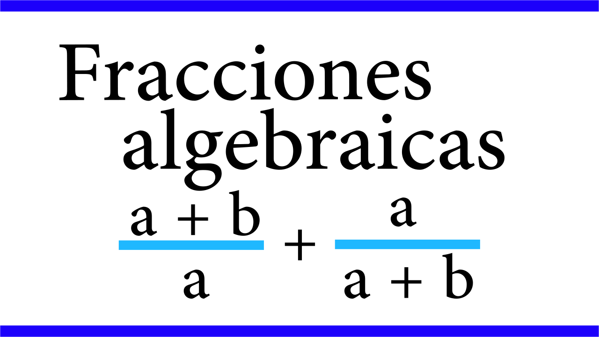
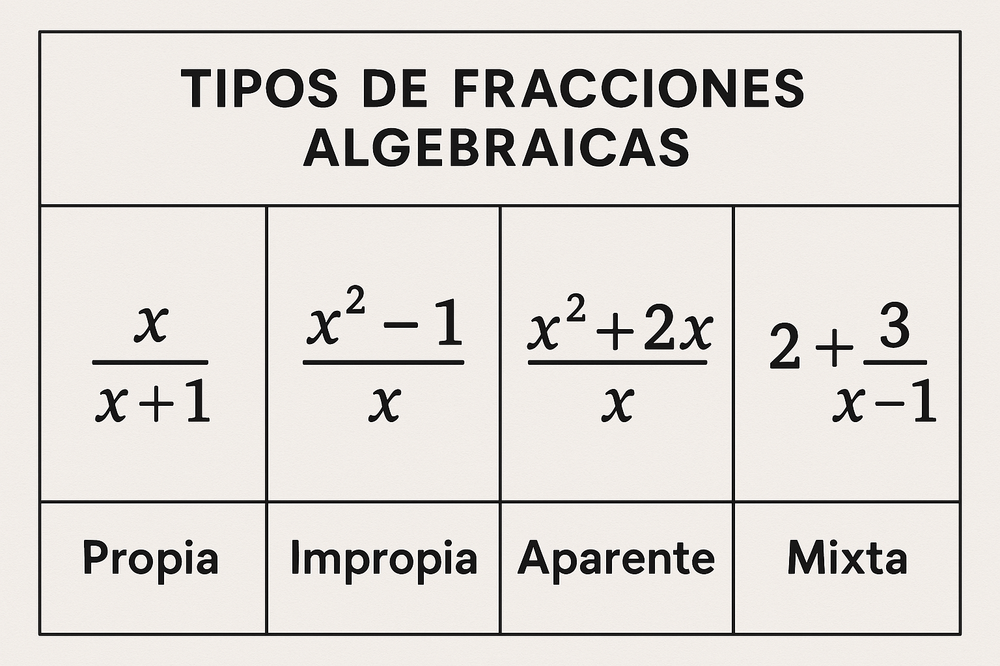
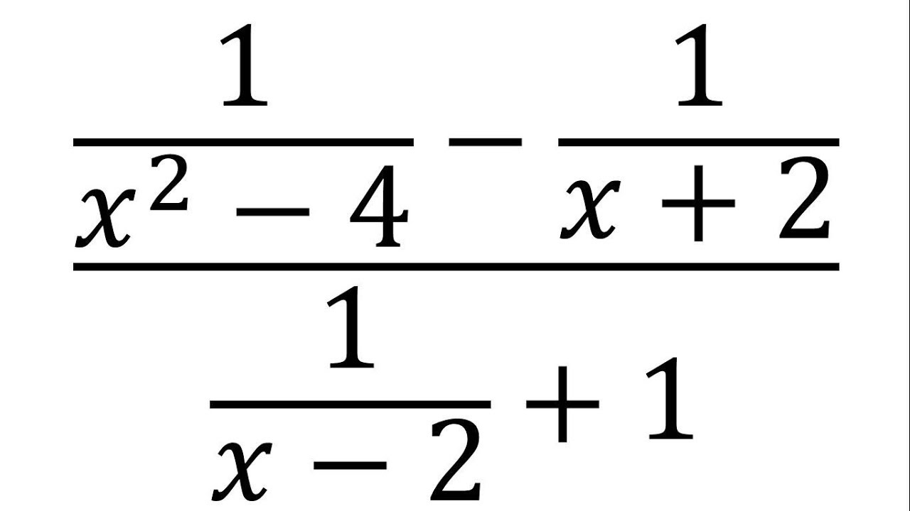

Todo lo que necesitas saber sobre fracciones algebraicas y sus operaciones.
¿Qué es una fracción algebraica?
Una fracción algebraica es una expresión de la forma P(x)/Q(x), donde P(x) y Q(x) son polinomios y Q(x) ≠ 0.
Es decir, es como una fracción común, pero en vez de números, puede tener letras (variables) y operaciones algebraicas.
Numerador: Polinomio que está arriba de la fracción.
Denominador: Polinomio que está abajo de la fracción y nunca puede ser cero.
Las fracciones algebraicas aparecen en muchos problemas de álgebra, cálculo y ciencias aplicadas, ya que permiten expresar relaciones entre polinomios y resolver ecuaciones complejas.

Tipos de fracciones algebraicas
Propias: El grado del numerador es menor que el del denominador.
Ejemplo: (x + 1)/(x² + 3)
Impropias: El grado del numerador es igual o mayor que el del denominador.
Ejemplo: (x² + 2x + 1)/(x + 1)
Fracciones equivalentes: Dos fracciones algebraicas son equivalentes si representan el mismo valor para todos los valores permitidos de la variable.
Fracciones complejas: Son aquellas en las que el numerador, el denominador o ambos contienen a su vez fracciones algebraicas.
Ejemplo: \(\frac{\frac{x}{x+1}}{x-2}\)

Dominio de una fracción algebraica
El dominio de una fracción algebraica es el conjunto de valores de la variable para los cuales la fracción está definida.
Recuerda: El denominador nunca puede ser cero.
Ejemplo: Hallar el dominio de 1/(x^2 - 4)
Paso 1: Igualar el denominador a cero: x² - 4 = 0
Paso 2: Resolver: x² = 4 ⇒ x = 2 o x = -2
Dominio: Todos los reales excepto x = 2 y x = -2
Nota: Si el denominador tiene varios factores, excluye todos los valores que lo hagan cero.
Simplificación de fracciones algebraicas
Simplificar una fracción algebraica significa reducirla a su mínima expresión, eliminando factores comunes en el numerador y el denominador.
Multiplicación y división de fracciones algebraicas
Multiplicación: Multiplica numeradores entre sí y denominadores entre sí. Simplifica si es posible. División: Multiplica la primera fracción por el inverso de la segunda.
Una fracción algebraica compleja es aquella en la que el numerador, el denominador o ambos contienen a su vez fracciones algebraicas.
Para simplificarlas, primero se resuelven las fracciones internas y luego se simplifica la fracción principal.
Ejemplo: \(\frac{\frac{x}{x+1}}{x-2}\)
Paso 1: Escribe la fracción como una división: \(\frac{x}{x+1} \div (x-2)\)
Paso 2: Multiplica por el inverso: \(\frac{x}{x+1} \times \frac{1}{x-2}\)
Paso 3: Multiplica numeradores y denominadores: \(\frac{x}{(x+1)(x-2)}\)

Descomposición en fracciones parciales
Es una técnica para expresar una fracción algebraica impropia como suma de fracciones más simples.
Muy útil en integración y resolución de ecuaciones.